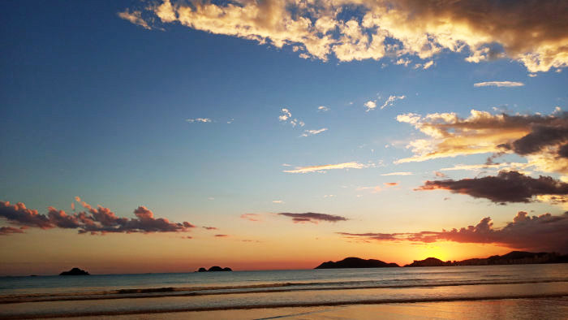

Bem Vindo!

Bem vindo ao Camping & Hostel Maré Viva! Nosso hostel é um lugar aconchegante e familiar, possui quartos compartilhados e privativos, área para barracas, wifi, cozinha compartilhada, banheiros compartilhados, o hostel támbem aluga barraca pra quem não tem e fica a apenas 100 metros da praia da enseada.
A praia da enseada também conhecida como pérola do atlântico possui um dos melhores pôr do sol do nosso litoral, está localizada ao lado de outra praias maravilhosas, como a praia do éden, praia do sorocutuba, praia do pernambuco, entre outras. Por isso afirmo que vale a pena conhecer o guaruja com suas praias e baladas.